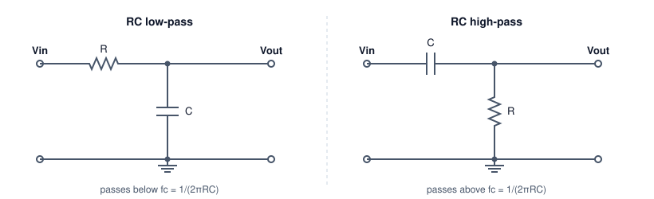

RC filters, filter order and families, sampling and aliasing, and FIR against IIR digital filters, designed to pull a 5 Hz signal out of 50 Hz hum and noise.
Author
Benedict Thekkel
A filter keeps the frequencies you want and rejects the rest. This page designs filters for one concrete job: a sensor produces a slow 5 Hz signal, sampled at 1 kHz, and mains wiring couples 50 Hz hum and broadband noise into it. The design target is at least 40 dB of rejection at 50 Hz, with less than 0.5 dB of loss at 5 Hz.
The page starts with a single resistor and capacitor, shows why that is not enough, then moves through filter order and the standard families, sampling and aliasing, and finally digital FIR and IIR filters applied to a real signal. It complements FFT Examples, which uses Fourier terms to forecast but never designs a filter.
RC filters: the first-order building block

RC low-pass: a series resistor R from Vin to the output node and a capacitor C from that node to ground, so it passes frequencies below fc = 1/(2 pi R C). RC high-pass: the same two parts swapped, with a series capacitor and a resistor to ground, so it passes frequencies above fc.
A capacitor’s impedance \(1/(j\omega C)\) falls as frequency rises. In the low-pass circuit, it forms a voltage divider with \(R\) that shorts high frequencies to ground:
At the cutoff frequency\(f_c\), the output is \(1/\sqrt{2}\) of the input, which is \(-3\) dB, and the phase lags 45 degrees. Above \(f_c\), the gain falls at 20 dB per decade, a factor of 10 for every factor of 10 in frequency. The high-pass version swaps the parts and mirrors the response.
Try a 10 k\(\Omega\) resistor and a 1 \(\mu\)F capacitor, which put \(f_c\) at 15.9 Hz, between the signal and the hum:
import numpy as npfrom pyecharts import options as optsfrom pyecharts.charts import Line, Barfrom pyecharts.globalsimport CurrentConfig# assets.pyecharts.org served an expired TLS cert on 2026-11-11; pin the jsDelivr mirrorCurrentConfig.ONLINE_HOST ="https://cdn.jsdelivr.net/gh/pyecharts/pyecharts-assets@f2328d558550046fc5449672a6850e848e141590/assets/v6/"from scipy import signalfs =1000.0# Hz, sample ratef_sig, f_hum =5.0, 50.0# HzR, C =10e3, 1e-6fc_rc =1/ (2* np.pi * R * C)def db(h):return20* np.log10(np.abs(h))def rc_lowpass(f):return1/ (1+1j*2* np.pi * f * R * C)print(f"fc = {fc_rc:.1f} Hz")print(f"at 5 Hz: {db(rc_lowpass(f_sig)):6.2f} dB (target: better than -0.5 dB)")print(f"at 50 Hz: {db(rc_lowpass(f_hum)):6.2f} dB (target: -40 dB or lower)")
fc = 15.9 Hz
at 5 Hz: -0.41 dB (target: better than -0.5 dB)
at 50 Hz: -10.36 dB (target: -40 dB or lower)
The RC filter fails both targets at once. It removes only 10 dB of hum, and it already costs 0.4 dB of the signal, which is close to the limit. Moving \(f_c\) down helps the hum and hurts the signal. A first-order slope of 20 dB per decade is too gentle when the frequencies to keep and to reject are only a factor of 10 apart. The fix is a steeper slope, which means a higher order.
Order and filter families
An \(N\)th-order filter has \(N\) energy-storing elements (capacitors or inductors), or the digital equivalent. Its slope beyond cutoff is \(20N\) dB per decade. For a fixed order, there is still a choice of shape, and each classic family optimises one property:
Family
Optimises
Trade-off
Butterworth
Flattest possible passband
Moderate roll-off
Chebyshev type I
Steeper roll-off
Ripple in the passband
Chebyshev type II
Steep roll-off, flat passband
Ripple in the stopband
Elliptic (Cauer)
Steepest roll-off for the order
Ripple in both bands
Bessel
Constant delay, so no overshoot on steps
Gentlest roll-off
The chart compares analog Butterworth filters of increasing order with a 4th-order Chebyshev type I that allows 1 dB of passband ripple. All have their cutoff at 20 Hz.
f = np.logspace(0, np.log10(500), 160)wa =2* np.pi * ffc =20.0curves = {}for n in (1, 2, 4, 6): b, a = signal.butter(n, 2* np.pi * fc, analog=True) curves[f"Butterworth N={n}"] = db(signal.freqs(b, a, wa)[1])b, a = signal.cheby1(4, 1, 2* np.pi * fc, analog=True)curves["Chebyshev I N=4, 1 dB"] = db(signal.freqs(b, a, wa)[1])for name, g in curves.items():print(f"{name:24s} at 5 Hz {np.interp(5, f, g):6.2f} dB at 50 Hz {np.interp(50, f, g):7.2f} dB")fam = Line(init_opts=opts.InitOpts(width="100%", height="360px")).add_xaxis([f"{x:.3g}"for x in f])for name, g in curves.items(): fam.add_yaxis(name, [round(float(v), 2) for v in g], is_symbol_show=False)fam = fam.set_series_opts(label_opts=opts.LabelOpts(is_show=False)).set_global_opts( title_opts=opts.TitleOpts(title="Analog low-pass filters, cutoff 20 Hz"), xaxis_opts=opts.AxisOpts(name="Hz (log)", boundary_gap=False), yaxis_opts=opts.AxisOpts(name="gain (dB)", min_=-100, max_=5), tooltip_opts=opts.TooltipOpts(trigger="axis"), legend_opts=opts.LegendOpts(pos_top="8%"),)fam.render_notebook()
Butterworth N=1 at 5 Hz -0.26 dB at 50 Hz -8.60 dB
Butterworth N=2 at 5 Hz -0.02 dB at 50 Hz -16.03 dB
Butterworth N=4 at 5 Hz -0.00 dB at 50 Hz -31.84 dB
Butterworth N=6 at 5 Hz -0.00 dB at 50 Hz -47.75 dB
Chebyshev I N=4, 1 dB at 5 Hz -0.31 dB at 50 Hz -42.54 dB
A 4th-order Butterworth reaches only about \(-32\) dB at 50 Hz, short of the target. A 6th-order one gets past \(-40\) dB and still loses almost nothing at 5 Hz. The Chebyshev beats the 4th-order Butterworth at 50 Hz, paid for with the 1 dB ripple it is allowed in the passband. When no ripple is acceptable, add order instead.
Sampling and aliasing
A digital filter only ever sees samples. Sampling at \(f_s\) can represent frequencies up to the Nyquist frequency\(f_s/2\), here 500 Hz. Anything above it does not disappear. It aliases: it folds back and appears as a lower frequency that the samples cannot tell apart from a real one.
The cell shows a 950 Hz tone sampled at 1 kHz. Its samples are exactly those of a 50 Hz tone, inverted. Once it is sampled, no digital filter can separate it from real mains hum.
This is why every analog-to-digital converter needs an anti-aliasing filter: an analog low-pass ahead of the converter that removes everything above \(f_s/2\) while it is still separable. Digital filtering can only clean up what survives sampling.
Digital filters: FIR and IIR
There are two kinds of digital filter.
A FIR (finite impulse response) filter computes each output as a weighted sum of recent inputs: \(y[n] = \sum_{k=0}^{M} b_k\,x[n-k]\). It has no feedback, so it is always stable. With symmetric weights, it has linear phase: every frequency is delayed by the same \(M/2\) samples, so wave shapes are preserved. The cost is length: sharp responses need many taps. The window method (firwin) truncates the ideal impulse response and tapers it with a window, here Hamming, to control ripple.
An IIR (infinite impulse response) filter also feeds back past outputs: \(y[n] = \sum b_k x[n-k] - \sum a_k y[n-k]\). It reaches a given sharpness with far fewer coefficients, because it is the digital twin of an analog filter. butter(..., fs=...) maps an analog Butterworth into discrete time with the bilinear transform. Its phase is not linear, and high-order IIR filters are numerically fragile, so they are run as a cascade of second-order sections (SOS).
A third option targets one frequency: a notch filter removes a narrow band around 50 Hz and leaves everything else, noise included.
numtaps =101fir = signal.firwin(numtaps, fc, window="hamming", fs=fs)iir = signal.butter(6, fc, output="sos", fs=fs)b_n, a_n = signal.iirnotch(f_hum, Q=30, fs=fs)fd = np.linspace(0.5, 150, 300)h = {"FIR, 101 taps": signal.freqz(fir, worN=fd, fs=fs)[1],"IIR Butterworth N=6": signal.sosfreqz(iir, worN=fd, fs=fs)[1],"IIR notch at 50 Hz": signal.freqz(b_n, a_n, worN=fd, fs=fs)[1],}cost = {"FIR, 101 taps": numtaps, "IIR Butterworth N=6": iir.size - iir.shape[0], "IIR notch at 50 Hz": len(b_n) +len(a_n) -1}for name, hh in h.items(): g = db(hh)print(f"{name:20s} at 5 Hz {np.interp(5, fd, g):6.2f} dB at 50 Hz {np.interp(50, fd, g):7.1f} dB "f"multiplies per sample {cost[name]}")resp = Line(init_opts=opts.InitOpts(width="100%", height="360px")).add_xaxis([f"{x:.1f}"for x in fd])for name, hh in h.items(): resp.add_yaxis(name, [round(float(v), 2) for v in np.maximum(db(hh), -120)], is_symbol_show=False)resp = resp.set_series_opts(label_opts=opts.LabelOpts(is_show=False)).set_global_opts( title_opts=opts.TitleOpts(title="Digital filters at fs = 1 kHz"), xaxis_opts=opts.AxisOpts(name="Hz", boundary_gap=False), yaxis_opts=opts.AxisOpts(name="gain (dB)", min_=-120, max_=5), tooltip_opts=opts.TooltipOpts(trigger="axis"), legend_opts=opts.LegendOpts(pos_top="8%"),)resp.render_notebook()
FIR, 101 taps at 5 Hz -0.11 dB at 50 Hz -83.2 dB multiplies per sample 101
IIR Butterworth N=6 at 5 Hz -0.00 dB at 50 Hz -48.1 dB multiplies per sample 15
IIR notch at 50 Hz at 5 Hz -0.00 dB at 50 Hz -268.9 dB multiplies per sample 5
Both low-pass designs meet the target. The FIR needs 101 multiplies per sample. The 6th-order IIR needs 15, in three second-order sections. On a small microcontroller, that difference decides the design. The notch removes the hum with only 5 multiplies, but it passes everything else, so the broadband noise stays.
Filtering a signal, and the cost of delay
Now the filters meet a signal. Two seconds of a 5 Hz sine, plus 50 Hz hum at 0.8 of its size, plus white noise, all sampled at 1 kHz. Each filter is scored by the RMS (root mean square) error against the clean sine, ignoring 0.2 s at each end where the filters start up.
A causal filter, one that only uses past samples, must delay its output. For the IIR filter, the delay varies with frequency. The cell measures it at 5 Hz by cross-correlation. Zero-phase filtering (sosfiltfilt) runs the filter forwards and then backwards, so the two phase shifts cancel. It needs the whole recording, so it only works offline.
rng = np.random.default_rng(0)t = np.arange(0, 2.0, 1/ fs)clean = np.sin(2* np.pi * f_sig * t)noisy = clean +0.8* np.sin(2* np.pi * f_hum * t) +0.3* rng.standard_normal(t.size)out = {"noisy input": noisy,"FIR (delay removed)": np.roll(signal.lfilter(fir, 1.0, noisy), -(numtaps -1) //2),"IIR causal": signal.sosfilt(iir, noisy),"IIR zero-phase": signal.sosfiltfilt(iir, noisy),}core = (t >0.2) & (t <1.8)def rms_err(y):return np.sqrt(np.mean((y[core] - clean[core]) **2))lags = np.arange(0, 100)xc = [np.dot(out["IIR causal"][core], np.roll(clean, k)[core]) for k in lags]delay = lags[int(np.argmax(xc))]aligned = np.roll(out["IIR causal"], -delay)for name, y in out.items():print(f"{name:22s} RMS error {rms_err(y):.3f}")print(f"IIR causal delay at 5 Hz: {delay} samples = {delay / fs *1e3:.0f} ms; "f"after removing it the RMS error is {rms_err(aligned):.3f}")idx = np.where((t >=0.6) & (t <1.0))[0][::2]sig = Line(init_opts=opts.InitOpts(width="100%", height="360px")).add_xaxis([f"{x:.3f}"for x in t[idx]])sig.add_yaxis("noisy input", [round(float(v), 3) for v in noisy[idx]], is_symbol_show=False, linestyle_opts=opts.LineStyleOpts(width=1, opacity=0.5))sig.add_yaxis("clean 5 Hz", [round(float(v), 3) for v in clean[idx]], is_symbol_show=False, linestyle_opts=opts.LineStyleOpts(type_="dashed"))sig.add_yaxis("IIR causal", [round(float(v), 3) for v in out["IIR causal"][idx]], is_symbol_show=False)sig.add_yaxis("IIR zero-phase", [round(float(v), 3) for v in out["IIR zero-phase"][idx]], is_symbol_show=False)sig = sig.set_series_opts(label_opts=opts.LabelOpts(is_show=False)).set_global_opts( title_opts=opts.TitleOpts(title="0.4 s of the signal before and after filtering"), xaxis_opts=opts.AxisOpts(name="s", boundary_gap=False), yaxis_opts=opts.AxisOpts(name="value"), tooltip_opts=opts.TooltipOpts(trigger="axis"), legend_opts=opts.LegendOpts(pos_top="8%"),)sig.render_notebook()
noisy input RMS error 0.647
FIR (delay removed) RMS error 0.056
IIR causal RMS error 0.661
IIR zero-phase RMS error 0.059
IIR causal delay at 5 Hz: 31 samples = 31 ms; after removing it the RMS error is 0.061
The zero-phase IIR and the delay-corrected FIR both recover the 5 Hz sine almost exactly. The residual error is the small slice of noise that falls inside the 20 Hz passband, and no low-pass filter can remove that. The causal IIR output is just as clean, but it arrives late. Scored against the clean signal at the same instant, the 31 ms lag makes it score worse than the unfiltered input. With its delay removed, its error matches the others.
The delay is the real price of causal filtering, and sharper filters pay more of it. In a control loop like the one in Control Systems, that delay is phase lag, and it eats directly into the phase margin. That is why loop sensors are filtered as lightly as possible, and why heavy filtering belongs in logging and analysis, where zero-phase filtering is free.
Summary
FIR
IIR
Structure
Weighted sum of past inputs
Also feeds back past outputs
Stability
Always stable
Must be designed stable; run as SOS
Phase
Exactly linear with symmetric taps
Nonlinear; use sosfiltfilt offline for zero phase
Cost for a sharp filter
Many taps (101 here)
Few coefficients (15 here)
Typical use
Audio, communications, anything shape-sensitive
Sensors, control, low-power embedded
Check
Rule
Slope
\(20N\) dB per decade for order \(N\)
Sampling
Keep content below \(f_s/2\); filter before the converter
Family
Butterworth for a flat passband; Chebyshev or elliptic for steepness; Bessel to keep shapes
Hum
A notch removes it cheaply but leaves broadband noise